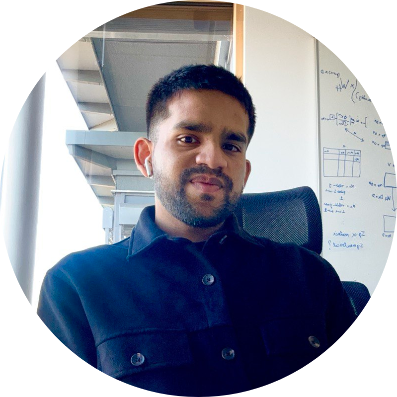
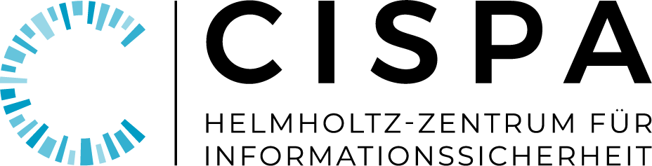
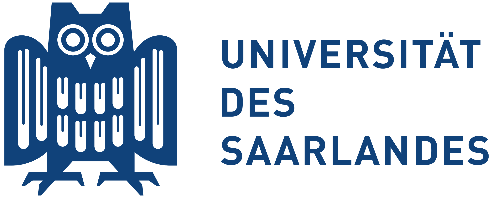
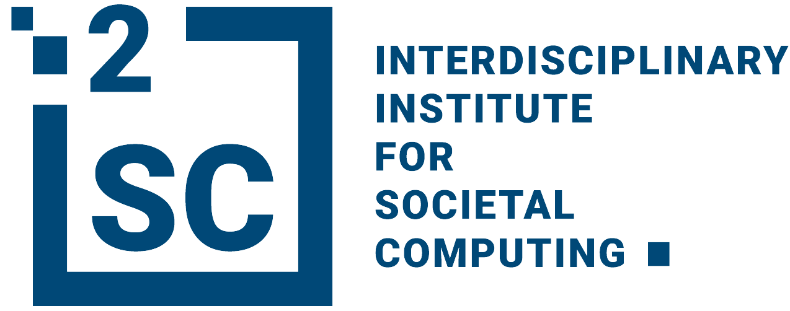
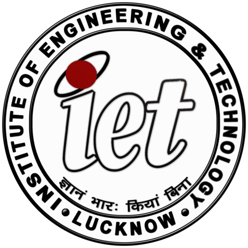

I am PhD student at CISPA Helmholtz Center for Information Security, working with Dr. Sebastian U. Stich. Prior to this, I completed my thesis on the topic of "Collaborative Unpaired Multimodal Learning for Image Classification" with Dr. Sebastian U. Stich and Dr. Rotem Mulayoff.
My research interests include Learning Theory, Computer Vision, Efficiency in ML, and Multimodal Representations Learning. I am also super interested in solving real world problems with startups and NGOs. If you are one of them, please reach out.
I received my Bachelors degree in Electrical Engineering from Institute of Engineering & Technology, Lucknow, India. After my graduation, I was a Post-Bacc fellow at Indian Institute of Technology, Madras, and later I worked with Sony Research India as a Research Intern. I also interned at SPIRE Labs, IISc Bangalore and ERTS lab, IIT Bombay during my bachelors.
I am passionate about Sports (Tennis, Badminton, Table Tennis, Volleyball, Cricket, Hiking) and I enjoy learning about Philosophy be it Western (Socrates, Plato, Aritotle etc.) or Eastern (Bhagavad Gita, Buddhism, Zen, Taoism etc.). I hope to read more, and explore the intersection of these fields. My goodreads profile showcases my reading journey.

CISPA
Past:Research Assistant & Master thesis student
PhD Candidate
2026 – Present

Saarland University
Masters Student
2023 – Present

I2SC
Research Assistant
2023 - 2024
Sony Research India
Research Intern
2022-2023
IIT Madras
Post-Bacc.
2021 - 2022

IET Lucknow
Electrical Engineering.
2017 - 2021

📚 See my publications on Google Scholar here.